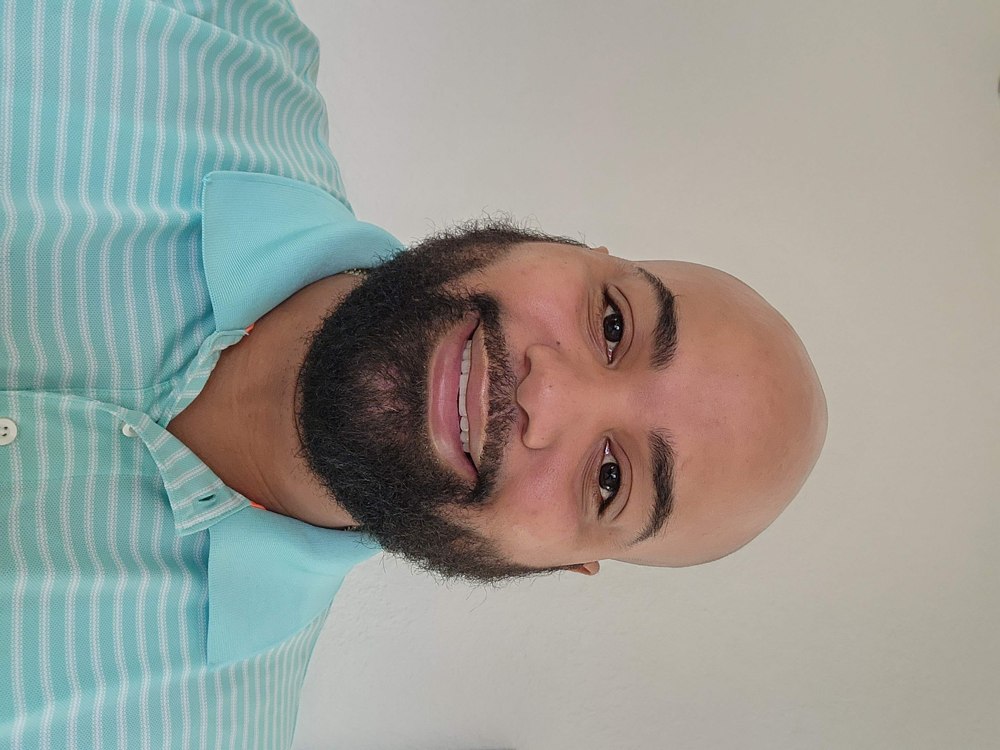

Chase Dumphord

Oxford, MS 38655 | Cell: 662-715-4233 | Email: chasedumphord@gmail.com
GitHub and connect with me through the contact section.
Objective
Seeking a position in cybersecurity and web development that allows me to utilize my skills in troubleshooting, technical languages, and network analysis.
Education
- Paris High School, Paris KY – College Prep Diploma – 2007
- Bluegrass Community & Technical College – 2016 – Associate’s in Arts
- University of Mississippi – Anticipated Graduation 2026 - Bachelor of Multi-Disciplinary Studies with Minors in Computer Science, Management Information Systems, and Entrepreneurship
Work Experience
-
Web Developer - Mid-South Bookkeeping
July 2023 - Present
- Developed and maintained web applications using HTML, CSS, and JavaScript
- Collaborated with designers and back-end developers to create user-friendly interfaces
- Optimized website performance and implemented SEO best practices
-
Field Service Technician II - Integrated Defense Security and Solutions
March 2021 - Present
- Met daily service repair needs and drove customer satisfaction through quality service
- Installed, performed corrective repair, and preventative maintenance on fielded equipment
- Maintained field service log and filing system to properly initiate, organize, and maintain job files and inventory
- Managed the installation of HMI and PLC application software development
- Analyzed necessary requirements in electrical installation using AB PLC
- Created & updated drawings, schematics, and other technical data documents
-
Support & Deployment Engineer - Starship Technologies
January 2020 - March 2021
- Maintained the health of global fleet of robots
- Troubleshot technical issues reported by test teams
- Carried out upgrades on robots and infrastructure
- Worked with engineering team to improve future robots
- Documented maintenance issues and parts inventory
- Managed a team of 4 to create support troubleshooting manuals for the robots
-
Maintenance Technician II - Advanced Technology Services
January 2019 - January 2020
- Performed mid to expert level break-fix preventative maintenance
- Performed PLC troubleshooting and ladder logic edits
- Experienced with Staubli and Epson robots, PLC 5000, conveyor systems, Servo drives & motors, hydraulic systems, pumps and motors, Cognex and Keyance vision systems, Keyance and Control Laser systems
- Independently performed maintenance as per industry standards
- Troubleshot and analyzed control systems to resolve software, hardware, and configuration problems
- Performed mechanical and electrical maintenance on 480v AC, 24v DC
- Troubleshot hydraulics and pneumatics
- Performed welding, soldering, and plasma cutting when necessary
-
Head Electrician - Ole Miss Athletic Department
January 2017 - January 2019
- Maintained and repaired electrical equipment in all athletics facilities
- Diagnosed and corrected issues with electrical malfunctions
- Provided technical guidance to secondary power
- Handled power outages and provided coverage to all athletic events
- Supervised 6 part-time employees
-
Robotics Technician - Voith Industrial Maintenance
July 2015 - December 2017
- Maintained and rebuilt Automated Guided Vehicle/Carts
- Performed troubleshooting, validating, and inspecting units to Toyota standards
- Performed preventive measures to the carriers that provided unbuilt vehicles to production workers
- On-call duties were provided daily as needed
Skills and Accomplishments
- Cybersecurity: ⭐️⭐️⭐️⭐️⭐️
- Web Development: ⭐️⭐️⭐️⭐️
- Network Analysis: ⭐️⭐️⭐️⭐️
- Incident Response: ⭐️⭐️⭐️⭐️
- HTML/CSS/JavaScript: ⭐️⭐️⭐️⭐️
- PLC Programming: SLC 500, AB PLC, Micrologix, Controllogix, Siemens
- HMI/SCADA Configuration: RSView32, AB Panels, Wonderware, RSViewSE/ME
- Industrial Networks & Communications: DH485, Ethernet TCP/IP, DH+, RS232, Devicenet, Wireless
- Ability to read blueprints
- Usage of Calipers, Micrometers, and Gages
- Ability to quickly troubleshoot operating errors and decide on a solution
- Initiative to work independently
- Excellent computer knowledge
- Excellent oral and written communication skills
Certifications
- CompTIA A+
- CompTIA Security+
- CompTIA Network+
- IPC – Certified IPC Specialist Serial # RRS-20111961405
- Certified Master Repair Technician - CellBotics Performance Training Center, Greenville, SC - Nov. 2020
- Mastering in Cell Phone and Tablet PC Repair
- The Complete 2024 Web Developer Boot Camp - Udemy
- Learn Ethical Hacking From Scratch 2024 - Udemy
- Certified Information Security Manager (CISM) - ISACA
Other